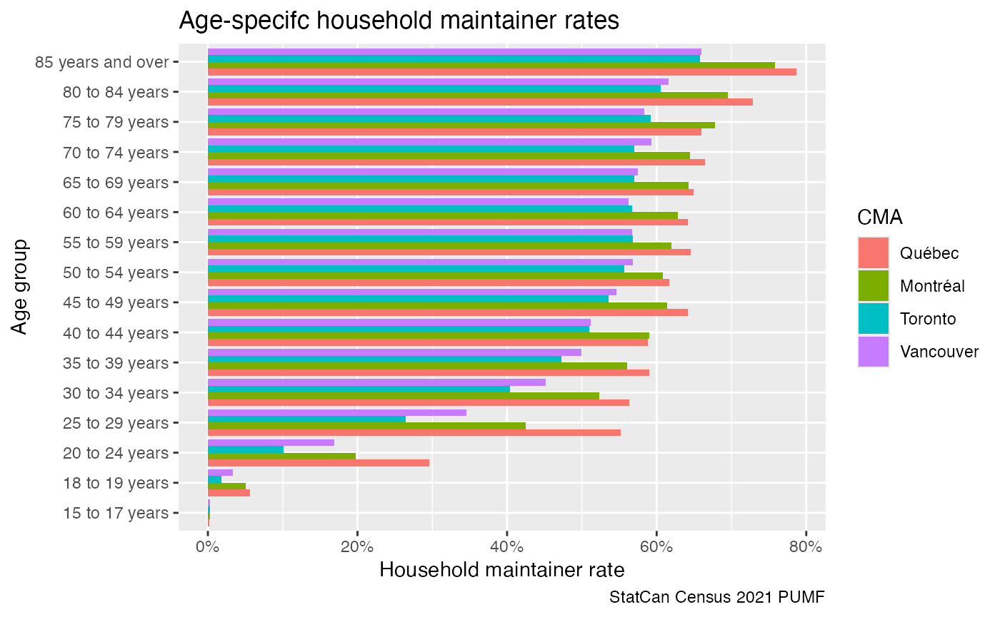

library(canpumf)
library(dplyr)
#>
#> Attaching package: 'dplyr'
#> The following objects are masked from 'package:stats':
#>
#> filter, lag
#> The following objects are masked from 'package:base':
#>
#> intersect, setdiff, setequal, union
library(ggplot2)
options(canpumf.cache_path = Sys.getenv("COMPILE_VIG_CANPUMF"))For Census data the package currently supports the 2021, 2016, and
2011NHS individuals pumf. These can be ordered from Statisticas Canada
via EFT and should be stored in the cache path pointed to in the
canpumf.cache_path option for the package to find the
data.
census_2021 <- get_pumf("Census",pumf_version="2021") |>
label_pumf_data(rename_columns = FALSE)As a simple applicartion we look at household maintainer rates by age group for select metro areas, using standard weights.
census_2021 |>
filter(CMA %in% c("Vancouver","Toronto","Montréal","Québec")) |>
filter(PRIHM!="Not applicable") |>
filter(AGEGRP!="Not available") |>
summarise(across(matches("WEIGHT|WT\\d+"),sum),
.by=c(CMA,AGEGRP,PRIHM)) |>
mutate(Share=WEIGHT/sum(WEIGHT),.by=c(CMA,AGEGRP)) |>
filter(PRIHM=="Person is primary maintainer") |>
ggplot(aes(y=AGEGRP,x=Share,fill=CMA)) +
geom_bar(stat="identity",position="dodge") +
scale_x_continuous(labels=scales::percent) +
labs(title="Age-specifc household maintainer rates",
y="Age group",
x="Household maintainer rate",
caption="StatCan Census 2021 PUMF") 